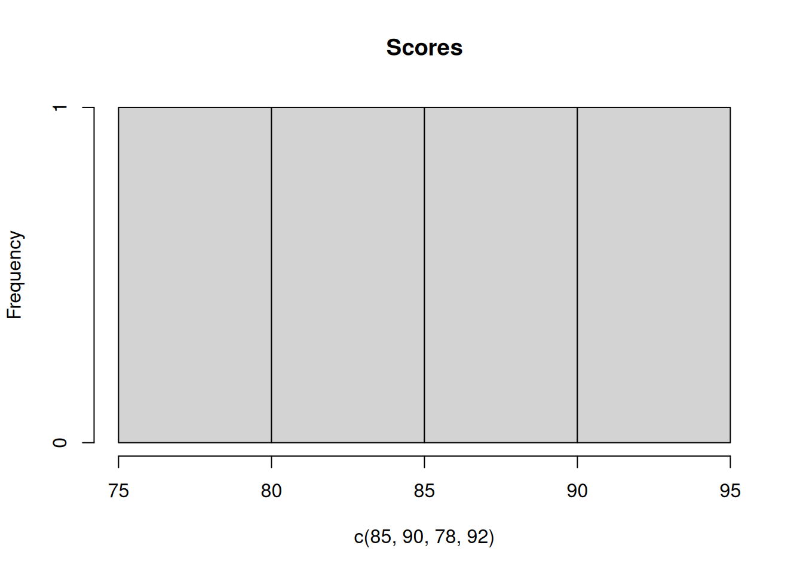

Show code
total = 1500
target = 1200
print(f"Sales: ${total} (Target: ${target})")Sales: $1500 (Target: $1200)This page demonstrates how to selectively enable toggle functionality for specific code cells, rather than enabling it document-wide. This approach gives you precise control over which cells have toggle buttons.
To enable selective toggle, use this minimal setup:
---
title: "Your Document Title"
format: html
filters: [toggle]
---The filters: [toggle] enables the toggle extension for the document so that only cells with toggle: true get toggle buttons.
total = 1500
target = 1200
print(f"Sales: ${total} (Target: ${target})")Sales: $1500 (Target: $1200)breakdown = [400, 500, 600]
for i, amount in enumerate(breakdown, 1):
print(f"Q{i}: ${amount}")Q1: $400
Q2: $500
Q3: $600scores <- c(85, 90, 78, 92)
cat("Average:", mean(scores), "\n")Average: 86.25 scores <- c(85, 90, 78, 92)
cat("Min:", min(scores), "Max:", max(scores), "\n")Min: 78 Max: 92 hist(c(85, 90, 78, 92), main = "Scores")
risk = "Medium"
confidence = 89
print(f"Risk: {risk} ({confidence}% confidence)")Risk: Medium (89% confidence)factors = {"Market": 3.2, "Credit": 2.8}
for name, score in factors.items():
print(f"{name}: {score}")Market: 3.2
Credit: 2.8This page uses code-fold: true so you can control code and output independently.
def growth_rate(current, previous):
return (current - previous) / previous * 100
result = growth_rate(1500, 1200)
print(f"Growth: {result:.1f}%")Growth: 25.0%Use toggle: true for optional details. Keep key results without toggles.